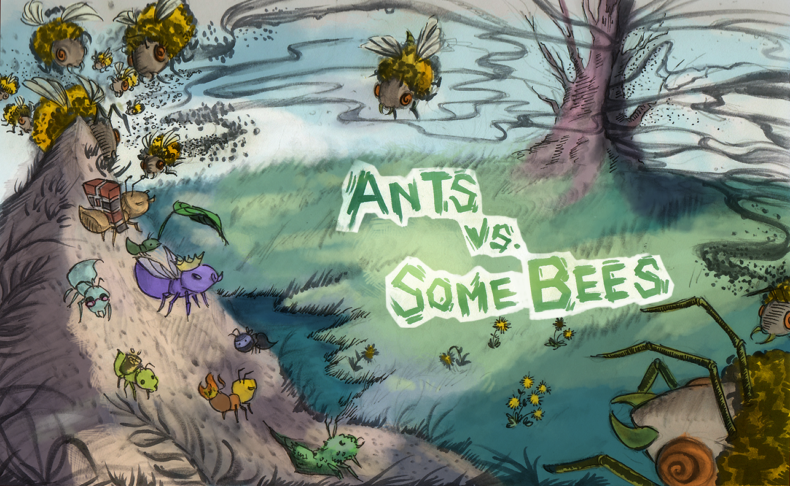

Bear Maps (Java)
Back end of a webserver that uses real world mapping by combining
tile images and map features
Website
Created a website from scratch using HTML, CSS, Javascript

Lock Manager (Java)
Created an API that processes objects sequentially in a database that follows the logic for table and page level locking

Tower Defense game: Ants (Python)
Combines functional and object-oriented programming pardigms

Scheme (Python)
Designed and developed an interpreter for Scheme language

Maps (Python)
Finds the closest restuarants based on Yelp Database by using machine learning.

Hog Dice Game in Python
A stimulator that computes strategies for the dice game.